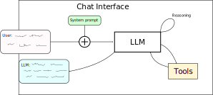
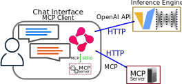

Tools and Reasoning
The general idea¶
- Just chat
- Chat + reasoning
- Chat + reasoning + tool use
- Examples of tool use
A Basic Chatbot¶

A Reasoning Chatbot¶

A ReActive Chatbot¶
- ReAct 
Examples of tool use¶
- Weather services
- Searching the internet
- Interacting with local files
- Playing games
- RAG (sometimes considered separate)
- Image generation
Model Context Protocol (MCP)¶
- Standard for how to interface with tools
- MCP Clients are those which want to use a tool
- MCP Server is what handles the tool
- By following the protocol, you don't need an implementation per server-client combination
Interfaces¶
- How to different part interface with each other
- Human and LLM
- LLM and tool
Interafaces and protocols¶

Human and LLM¶
- Text input
- HTTP request
- Tokens (tokenizer.encode)
- Next token (LLM)
- Text (tokenizer.decode)
- HTTP stream
- Text output
LLM and tools¶
- Tokens
- Text (tokenizer + chat template)
- Tool request (stdio/http)
- Tool use (MCP server)
- Tool response (stdio/http)
- Tokens
The Model Context Protocol server¶
- https://modelcontextprotocol.io/docs/learn/server-concepts
- Can provide
- Tools: Functions callable by the LLM
- Resources: Read only access to files or databases
- Prompts: Already prepared and ready for use
- The MCP defines the structure of input/output for tool calls
- The MCP does not define the structure the LLM should output
How the model calls a tool¶
- Forced structured output or
- Model specific embedded structured output
Forced structured output¶
- Structured decoding to influence model output
- Not compatible with ReAct, only Act.
- In vLLM: Named/Required Function Calling
- Compatible with any model
Automatic Function Calling¶
- Models are trained/finetuned to use structured output
- Compatible with ReAct
- Structure is model specific, inference engine must support it
- xml, json, special tokens, ...
Using MCP based tools¶
- Inference Engine
- MCP Client
- stdio
- SSE
- Streamable-HTTP
Enabling Tool Calls in vLLM¶
- https://docs.vllm.ai/en/stable/features/tool_calling.html#automatic-function-calling
--enable-auto-tool-choice--tool-call-parser=<supported-parser-name>
Connecting to an MCP Server from Chainlit: stdio¶
- The MCP Client (Chainlit) launches the tool
- Chainlit config limits what executables can be used
- Recommended to be careful with what you add here
- The MCP client will launch the tools as a subprocess
- As your user
- Don't (let the AI) run unknown code
- Examples:
npx -y @modelcontextprotocol/server-filesystem /dev/shm /tmpmcp run -t stdio mcp_server.py
Connecting to an MCP Server from Chainlit: HTTP¶
- SSE deprecated in favor of Streamable HTTP
- For connecting to existing MCP Server
- Authentication tokens typically needed
- Required:
- HTTP adress
- Possibly a header with authentication token
Writing tools according to MCP¶
- The Python SDK for MCP Servers
- https://github.com/modelcontextprotocol/python-sdk?tab=readme-ov-file#quickstart
Exercises¶
- Using tools via MCPs in Chainlit
- Developing your own MCP server
Using tools via MCPs in Chainlit¶
- Edit
~/.chainlit/config.tomlunder[features.mcp.studio]change toallowed_executables = [ "npx", "uvx", "mcp" ] - Copy the the quick start example from the Python MCP SDK https://github.com/modelcontextprotocol/python-sdk?tab=readme-ov-file#quickstart
- Prepare the custom Chainlit runtime environment for this exercise:
cp /mimer/NOBACKUP/groups/llm-workshop/exercises/day3/tools/portal/chainlit/use_existing_vllm.sh ~/portal/chainlit/ - Launch a Chainlit interactive session from https://alvis.c3se.chalmers.se with the
use_existing_vllm.shruntime and 1 CPU core. - Press the plug symbol to add an MCP Server
- Select
stdioas transport - Give it a name
- Add command
mcp run -t stdio <path to mcp server file here>
- Select
Developing your own MCP server¶
- Based on the Getting Started example write your own MCP tool.
- Note that if you launch it from inside the container, you will be limited to what is in the container
- Optionally, install mcp in a venv and launch an SSE instead of stdio and use that:
- You will need to forward the port for the SSE to the compute node you're running Chainlit on